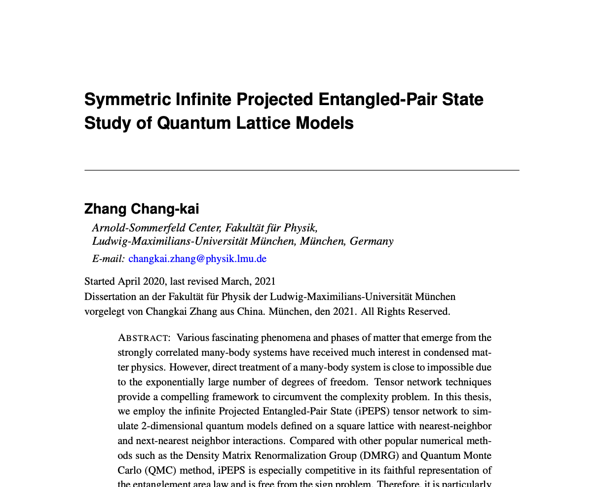

Striving for the stars, standing on the ground
仰 望 星 空，脚 踏 实 地
This is the main entrance of all works of Zhang Chang-kai, including projects, articles and comments. My major devotion to physics concentrates on the theoretical and computational analysis of strongly correlated systems. As a growing physicist, most of my current accomplishments involve the refinements and philosophical insights towards well-established high energy and condensed matter theories.
Research Interest
Recently, I am attracted by conducting theoretical and computational investigations via powerful tools including AdS/CFT correspondence and numerous tensor network algorithms in an attempt to resolve the mysteries in strongly correlated systems. Currently, I am working on the application of tensor networks to various quantum lattice models.
Research Work

Gauge Gravity Duality
General review on the Gauge Gravity Duality and its application to holographic entanglement entropy.

Tensor Networks
Symmetric infinite Projected-Entangled Pair State (iPEPS) study of two-dimensional quantum lattice models.

Structure of Physics
This article elaborates the construction of fundamental theory of Physics based solely on requirements on self-consistency.
Get In Touch
Fill out your name, your preferred email address and your questions or comments in the following boxes, click submit and I will receive your message.
-
Address
Ludwig-Maximilian-Universität,
Geschwister-Scholl-Platz 1,
80539, Munich, Germany
-
Address
Arnold Sommerfeld Center,
Theresienstraße 37,
80333, Munich, Germany